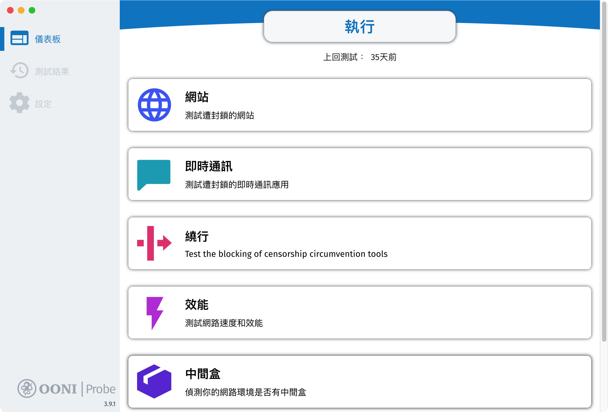
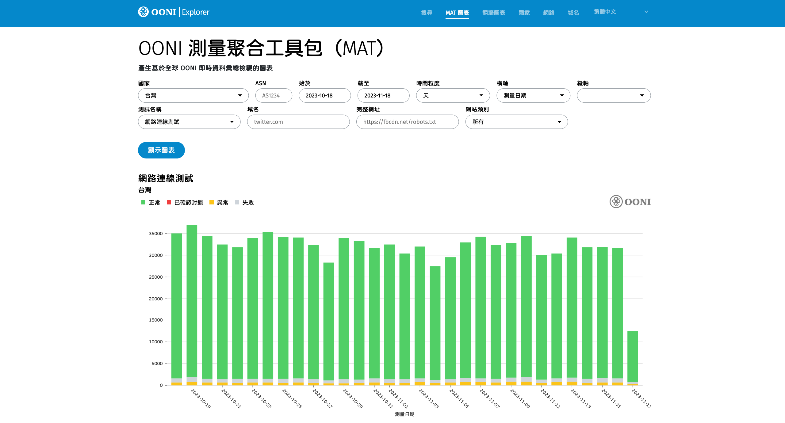
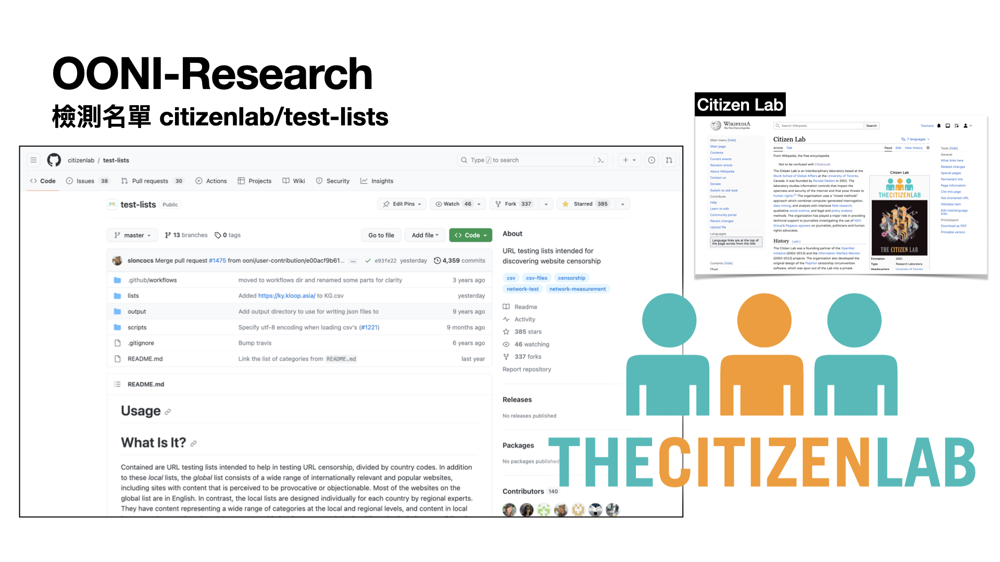
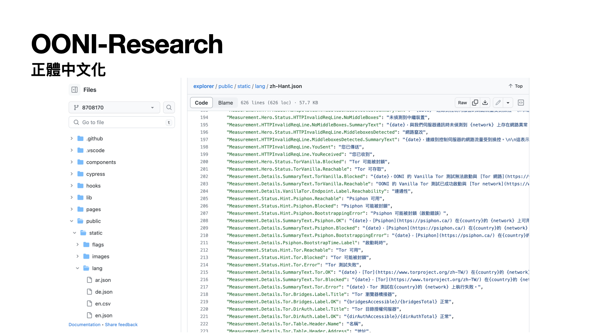

網路干預
網路干預檢測狀況會透過以下但不侷限的狀況發生：
- DNS 篡改（DNS tampering, DNS 異常）
- IP 封鎖（DNS tampering, TCP/IP 異常）
- HTTP 封鎖（HTTP blocking, 例如：封鎖頁面）
- 基於 TLS 的干擾（例如在 TLS 握手期間的 ClientHello 訊息後觀察到的連線重置）
OONI（Open Observatory of Network Interference）是一個觀察網路審查的專案。由全球的志工協助執行觀測應用程式並偵測阻擋與回報其觀察結果到該組織。
開放文化基金會（Open Culture Foundation, OCF）身為 OONI 的社群夥伴之一，協助區域在網路審查議題上的倡議與 OONI 觀察軟體的推廣安裝。
OONI 計畫主要觀測所在的網路是否透過干預的方式提供非預期的瀏覽內容到用戶端，並提供即時與公開的網路審查觀測資料分析。

網路干預可以透過以下方式進行，但其結果與目的都是阻止檢視網站內容。 在台灣比較熟悉與類似的阻擋行為與技術如中華電信提供的「色情守門員」、透過 DNS 阻擋廣告、惡意網站的 AdGuard、Pi-Hole。 或是數位發展部與財團法人台灣網路資訊中心（TWNIC）進行網域阻擋的打擊詐騙方式，都可算是阻擋網頁瀏覽。
以上舉例通常都是針對惡意網站、網路廣告、釣魚詐騙來進行善意阻擋，但如果是刻意阻擋某些內容呢？或是來自某些未被觀察紀錄到 ASN 的阻擋行為？
觀測程式提供行動裝置版本（Android, iOS）、桌面版本（Windows 64bit, macOS）、或是無任何桌面介面的終端程式版本。
桌面版本與行動裝置版本介面類似，可以透過「執行」來檢測所有項目或是單一項目檢測均可。

終端機介面可以使用 ooniprobe run 執行所有檢測項目。或是設定 cronjob 在空閒時間跑觀察檢測。
10 4,10,22 * * * ooniprobe run > /dev/null 2>&1 &

檢測觀察資料會即時回傳到 OONI 資料庫，可以透過 OONI Explorer 線上分析各區域與檢測項目狀況。 或是透過直接存取 S3 儲存空間下載延遲一小時的原始觀測資料作更多的交叉分析。


